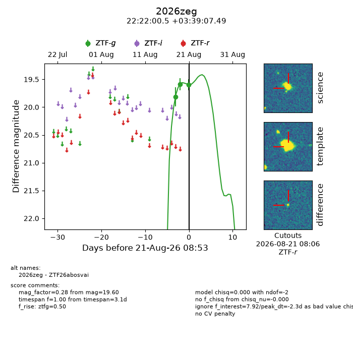
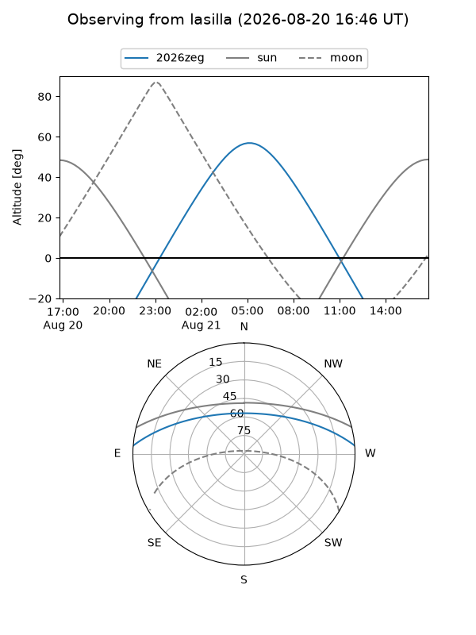
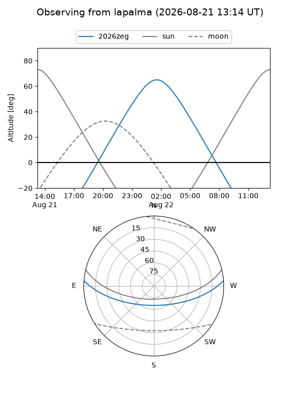
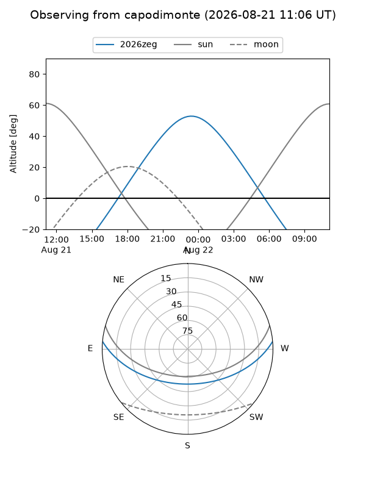
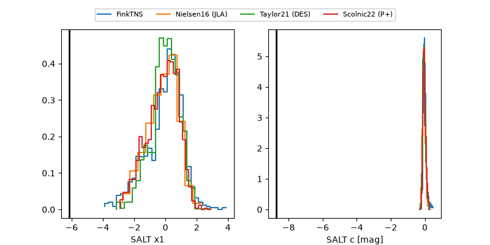

2026zeg
Target 2026zeg at 2026-08-21 08:57
Aliases and brokers:
FINK-ZTF: ztf.fink-portal.org/ZTF26abosvai
Lasair-ZTF: lasair-ztf.lsst.ac.uk/objects/ZTF26abosvai
ALeRCE-ZTF: alerce.online/object/ZTF26abosvai
YSE-PZ: ziggy.ucolick.org/yse/transient_detail/2026zeg
TNS name: wis-tns.org/object/2026zeg
Direct TNS query: direct search
alt names
ZTF26abosvai (ztf,fink_ztf)
2026zeg (tns,yse)
Coordinates:
equatorial (ra, dec) = 335.5019,+3.65208
equatorial (HMS+DMS) = 22:22:00.47,+03:39:07.49
galactic (l, b) = (67.5739,-42.60485)
Flags:
TNS type: nan
peak dt: -2.3
Photometry:
last ztfg=19.60
3 ztfg detections
Lightcurve

Visibility



Additional plots
